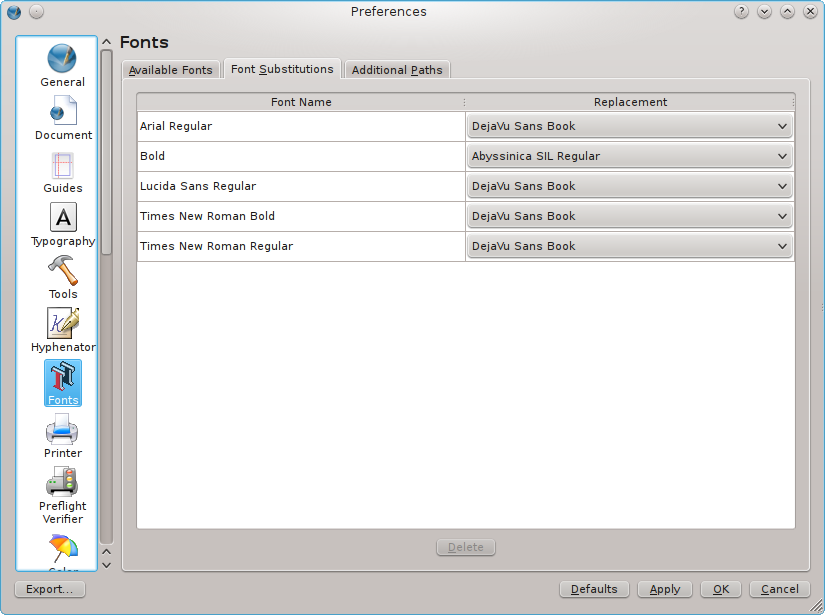

Schriften bzw, Schriftdateien (Fonts) sind eine der Hauptzutaten im Desktop Publishing. Aus diesem Grund bietet Scribus einige mächtige Werkzeuge, um Schriften zu verwalten und zu betrachten.
Die wichtigsten Werkzeuge finden Sie im Datei-Menü unter Dokument einrichten bzw. Allgemeine Einstellungen (zu den Unterschieden zwischen den beiden fast identischen Dialogen vgl. Konfiguration) im Unterdialog Schriften tab.
Beide Dialoge sehen identisch aus, was auf den ersten Blick ein wenig verwirrend erscheinen mag, weil einige Optionen wahrscheinlich ausgegraut sind. Wie Sie sehen werden, steckt jedoch eine gewisse Logik hinter diesem Verhalten.
Der erste Reiter (»Verfügbare Schriften«) zeigt zunächst die Schriften an, die Scribus während des ersten Starts gefunden hat. Dabei hängt es vom verwendeten Betriebssystem ab, welche Verzeichnisse nach Schriftdateien durchsucht werden (s.u.). Wenn Sie ein Scribus-Dokument öffnen, sucht Scribus zusätzlich noch im »Dokumentpfad«, d.h. in dem Verzeichnis, in dem das Scribus-Dokument gespechert ist.
Der Reiter »Verfügbare Schriften« besteht aus zahlreichen Spalten, von denen manche nur Informationen über eine Schrift anzeigen, während Sie in anderen Einstellungen zur Behandlung von Schriften machen können, und zwar entweder in einem bestehenden oder neu zu erstellenden Dokumenten. Werfen wir einmal einen Blick auf die einzelnen Spalten:
|
Sobald Sie ein Scribus-Dokument öffnen, überprüft das Programm, ob alle Schriften, die darin verwendet werden, verfügbar sind. Wenn eine Schrift nicht auf Ihrem System oder Netzwerk vorhanden ist, wird Scribus Sie beim Öffnen des Dokuments auffordern, eine Ersatzschrift anzugeben:
 |
Sie können Ihre Entscheidung später im Reiter »Schriftersetzung« korrigieren. Hier können Sie die Ersatzschrift(en) für das aktuelle Dokument (in den Dokumenteinstellungen) oder für neue Dokumente (in den Allgemeinen Einstellungen) ändern.
|  |
Eine der Herausforderungen in der Schriftenverwaltung (»Font Management«) liegt darin begründet, daß Betriebssysteme auf sehr unterschiedliche Art und Weise den Zugriff auf Schriften ermöglichen. So verwenden Windows, OS/2 und eComStation beispielsweise ein einziges systemweites Verzeichnis (Windows: C:\Windows\Fonts, OS/2 und eComStation: C:\PSFONTS, Haiku: /system/data/fonts/), während moderne Systeme der UNIX-Familie sowohl auf System- als auch auf Benutzerverzeichnisse zugreifen (Mac OS X: /Library/Fonts und /Users/username/Library/Fonts; Linux und *BSD: /usr/share/fonts, /usr/local/share/fonts und /home/username/.fonts). In der Frühzeit des Desktop Publishings war dies ein ernstes Problem, denn professionelle Anwender müssen mit Hunderten oder gar Tausenden Schriften umgehen, aber weder die Hardware noch die Betriebssysteme dieser Zeit konnten mit einer solchen Menge an Schriftdateien umgehen. Die Lösung bestand in der Entwicklung spezieller Software, sogenannten Font-Managern, die es ermöglichten, die Zahl der zu einem bestimmten Zeitpunkt verfügbaren Schriften so zu reduzieren, daß Betriebssysteme und Anwendungen damit zurechtkamen. Um einen Absturz des Betriebssystems zu verhindern, konnte man mit einem Font-Manager zusätzliche Pfade zu Verzeichnissen mit Schriften festlegen, auf die das System selbst keinen Zugriff nahm. So konnte man die Schriften verwenden, ohne sie vorher »installieren« zu müssen.
Moderne Hardware, Betriebssystem und Anwendungen können zwar problemlos mit Hunderten installierter Schriften umgehen, aber die Möglichkeit, zusätzliche Schriftpfade festzulegen, ist immer noch ausgesprochen nützlich. Viele Anwender möchten beispielsweise keine Schriften installieren, die sie nur selten benutzen. Mit Hilfe der beschriebenen Funktion können Sie eine Schrift in ein beliebiges Verzeichnis kopieren und den Pfad zu diesem Verzeichnis im Schriftendialog von Scribus eingeben.
Um einen zusätzlichen Schriftenpfad einzugeben, müssen Sie den Reiter »Zusätzliche Pfade« in den Allgemeinen Einstellungen verwenden. Dabei darf kein Dokument geöffnet sein (in den Dokumenteinstellungen ist dieser Dialog immer ausgegraut):
 |